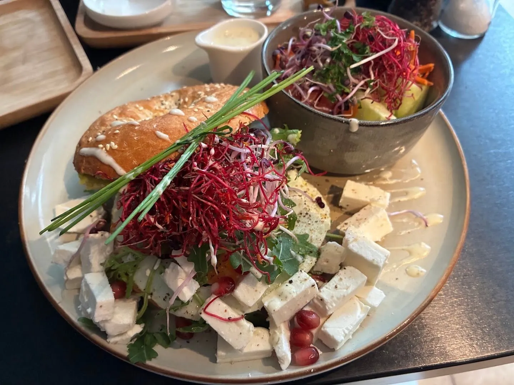
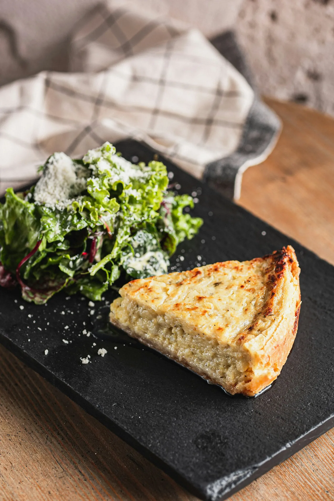
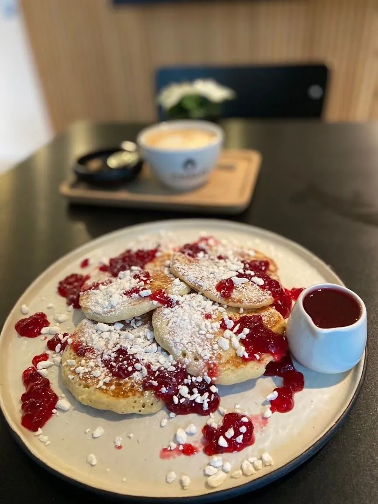
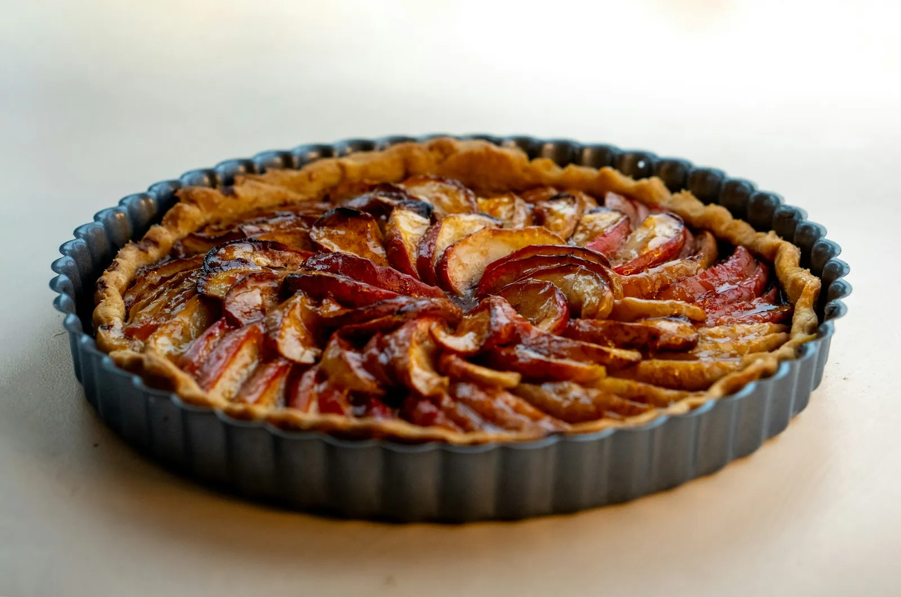
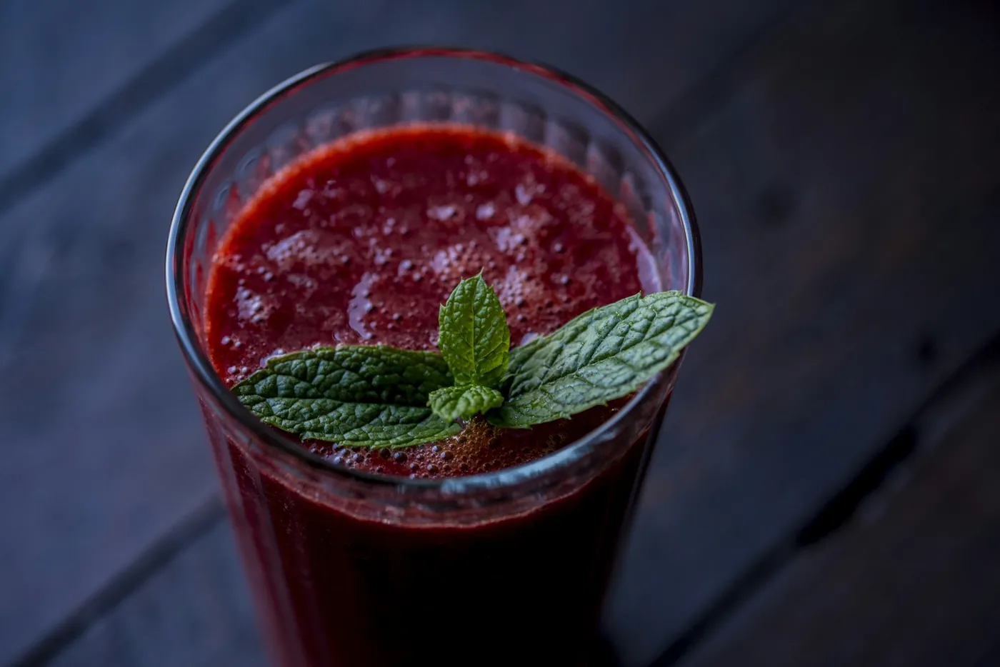
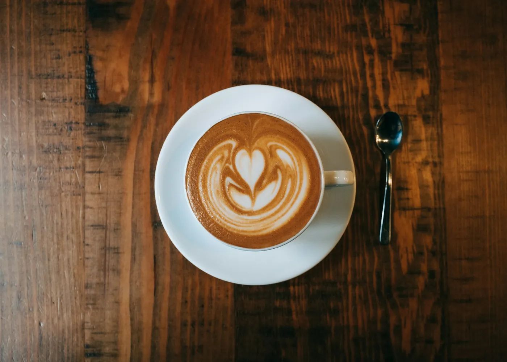
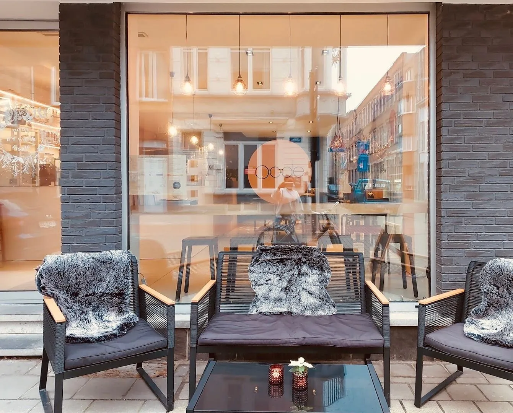

Wat op je bord ligt, komt uit onze eigen keuken.
Taarten en quiches bakken we hier ter plaatse. Over de middag eet je een verse quiche met een frisse salade, bij je koffie krijg je een koekje dat nooit in een fabriek heeft gelegen. We werken met lokale producten waar het kan.




Koffie voorop. En alles wat ernaast hoort.
Een latte om rustig van te genieten, of een ijskoffie als de zon schijnt. Daarnaast iets zoets of een verse lunch, en altijd een fris sapje.


Een eigen koffiebar. Daar droomde ik al lang van.
Ik volgde een barista-opleiding, en zo is Oode er gekomen: een ode aan lekkere dingen én aan Oostende.
Ik wilde een plek waar alles vers is en waar je proeft waar het vandaan komt. Dus maken we zelf wat we kunnen, en de rest halen we zo dicht mogelijk bij huis.
Het mooiste compliment krijgen we aan tafel.
op Google
"Heerlijke lattes, heerlijke zelfgebakke taart, warm onthaal."Davy C. · gast
"Beetje weg van de drukte, lekkere ijskoffie en smoothie gedronken. Gastvrije bediening."Fien C. · gast

Schuif aan in de Aartshertoginnestraat.
Binnen aan een tafeltje, of buiten op het terras met een vacht over je stoel.
Adres
Aartshertoginnestraat 458400 Oostende